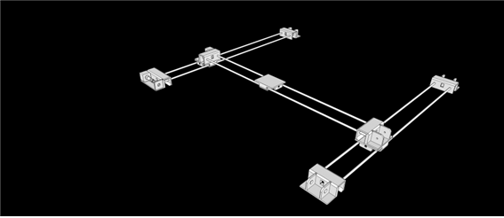
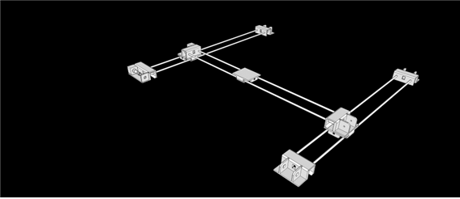
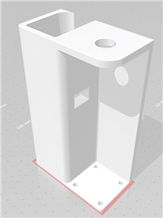
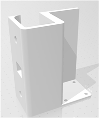
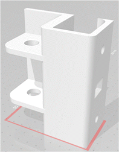
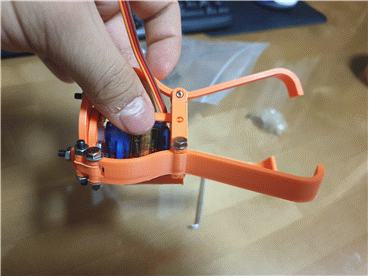
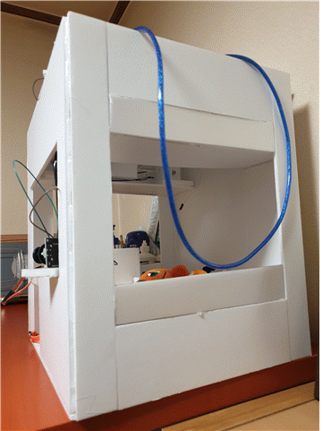
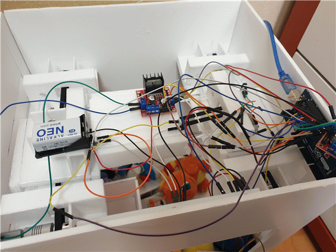
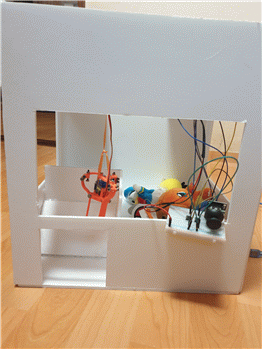
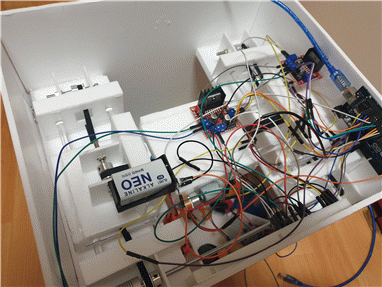

# xy 플로터 레일
조이스틱의 조작에 따라 x축 y축 원하는 위치로 집게가 이동할 수 있게 한다
실제구현

2017100615 조민경
2018103264 조성호
타이밍 벨트 GT2 오픈형 1m : 2개
GT 2 벨트 고정 클립 : 3개
연마봉 270mm 내경 5파이 : 1개
아크릴 봉 내경 8파이 200mm : 6개
모터커플링 기본 스프링형 5mm x 5mm : 1개
풀리 20잇수, 내경 5mm : 7개
리미트 스위치 기본형 A형 : 4개
아두이노 메가 2560 : 1개
L298N : 2개
9V 건전지 : 1개
9V 건전지 홀더 : 1개
브레드보드 빵판 대형 : 1개
브레드보드 빵판 소형 : 1개
F-M 점퍼 케이블 : 40개
M-M 점퍼 케이블 : 80개
아두이노용 조이스틱 : 1개
DC 모터 5V : 3개
볼트 너트 : 많이
서보모터 : 1개
인형뽑기 내부구조

# xy 플로터 레일
조이스틱의 조작에 따라 x축 y축 원하는 위치로 집게가 이동할 수 있게 한다
실제구현
사용 재료
우드락 1t 60x90
타이밍 벨트 GT2 오픈형 1m : 2개
GT 2 벨트 고정 클립 : 3개
연마봉 270mm 내경 5파이 : 1개
아크릴 봉 내경 8파이 200mm : 6개
모터커플링 기본 스프링형 5mm x 5mm : 1개
풀리 20잇수, 내경 5mm : 7개
리미트 스위치 기본형 A형 : 4개
볼트 너트 : 많이
설계도

조립과정
1층 모터부(1개)

2층 모터부(1개)

모터가 없는 곳 4개

집게
집게 3D 프린터 링크와 조립 설명
조립과정 영상
3D 프린터 파일

외부 구조

설계도

중간 조립 과정

DC모터와 L298N 연결
연결
모터 x축 2 3
모터 y축 4 5
모터 z축 6 7
리미트 센서 x- 8
리미트센서 x+ 9
리미트센서 y- 10
리미트센서 y+ 11
조이스틱 x A0
조이스틱 y A1
서모모터 38
스타트 버튼 12
집게 조작 버튼 13
완성
앞면

윗면

실패원인
-운반을 용이하게 하기 위하여 크기를 줄이면서 xy플로터를 받치는 힘이 약해져 가벼운 모터를 사용함
-제작비의 절감을 위하여 프로파일 대신 우드락, 폼보드를 사용하고 무거운 모터대신 가벼운 모터를 사용한 것
-시리얼 모니터의 화면에는 입력이 정상적으로 됨